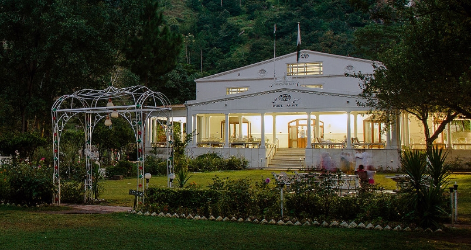

Marghzar
About 13 km from Saidu Sharif, is situated the serene small town of Marghzar at the foot of Mount Elum. Its White Marble Palace, built by’ ruler of Swat in I940, adds to the grandeur of this peaceful small valley’. The palace has now been converted into a top class hotel with excellent lodging and boarding facilities. While voyaging towards Margazar you can see a road turning towards Slampur. A small village famous for its wool cottage industry.
